General Views — Dragon and Phoenix
The tianqiuping (天球瓶, "celestial sphere bottle") carries two symmetrical anhua compositions: the five-clawed imperial dragon (五爪龍) on one side and the phoenix (鳳) on the other. Both motifs encompass the globular body in a continuous panoramic arrangement without cartouches. Cloud scrolls and a flame frieze decorate the neck.
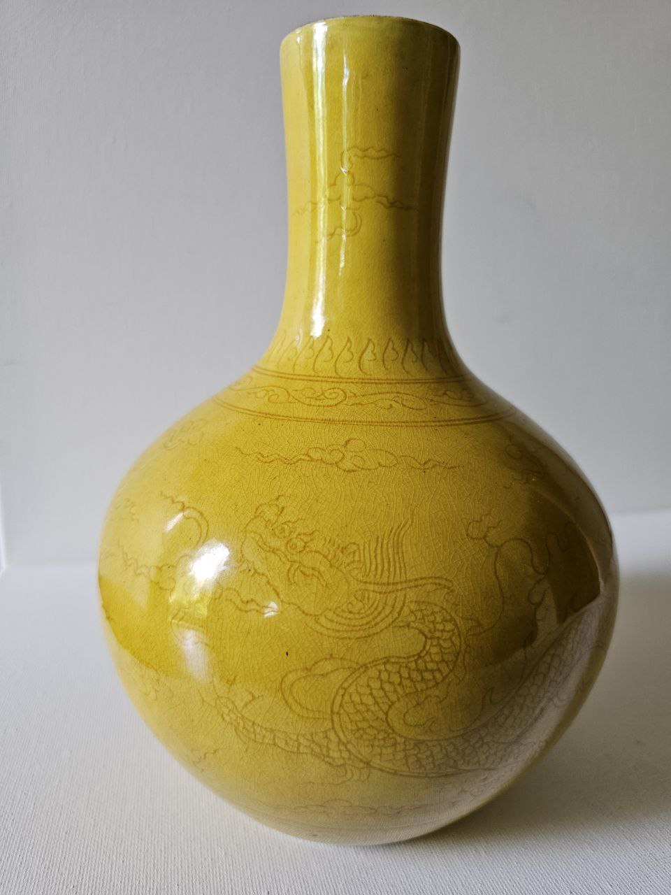
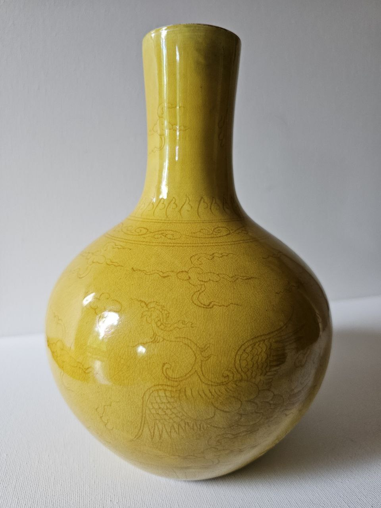
Base, Reign Mark and Foot Rim
The base presents three diagnostically significant zones: the white-glazed recess bearing the six-character reign mark in underglaze cobalt within a double circle; the unglazed foot rim with a natural firing tone and no evidence of later grinding; and the lower body with anhua-incised upright lappets.
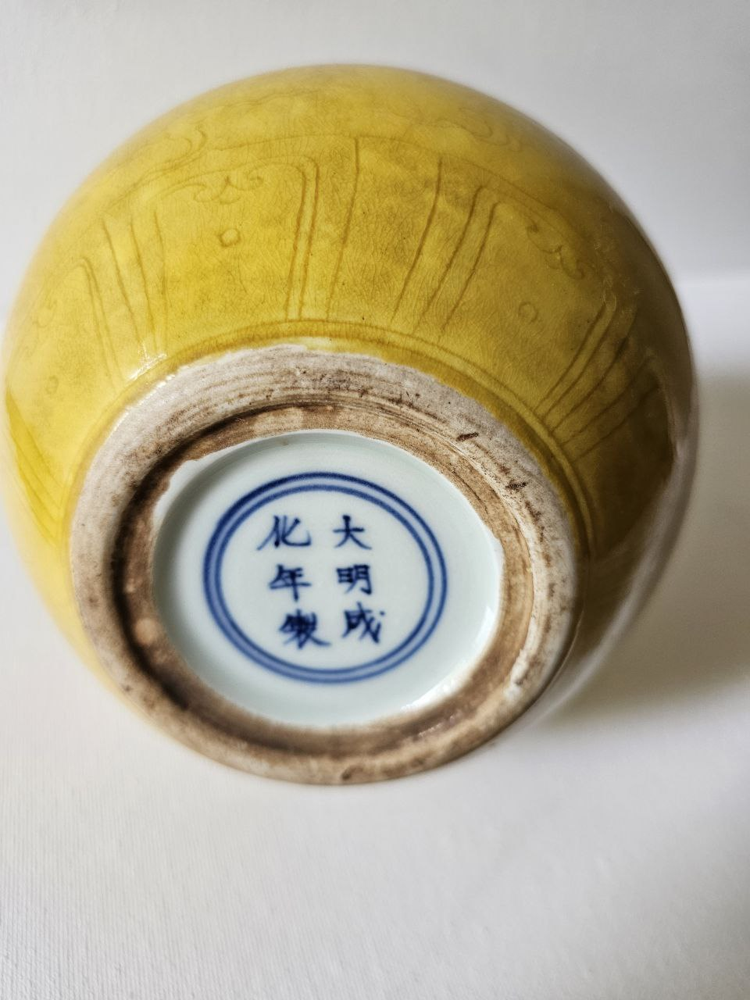
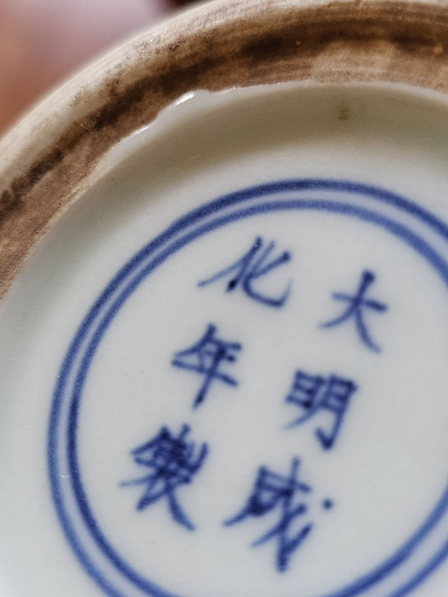
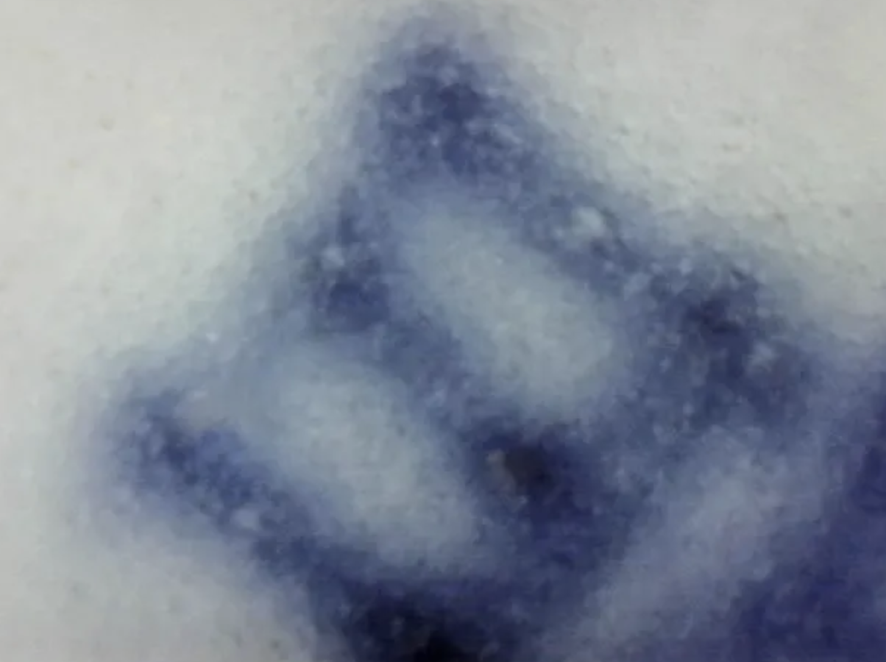
Anhua Decoration — Detail
The anhua (暗花, "hidden decoration") was incised with a sharp stylus into the leather-hard porcelain body before glazing. Three line hierarchies are distinguishable: the main dragon/phoenix contour, the detail lines of scales and feathers, and the cloud scrolls. After firing the incised lines sink into the lead-silicate matrix and become legible only under raking or directed light — a signature of the highest tier of Jingdezhen court production.
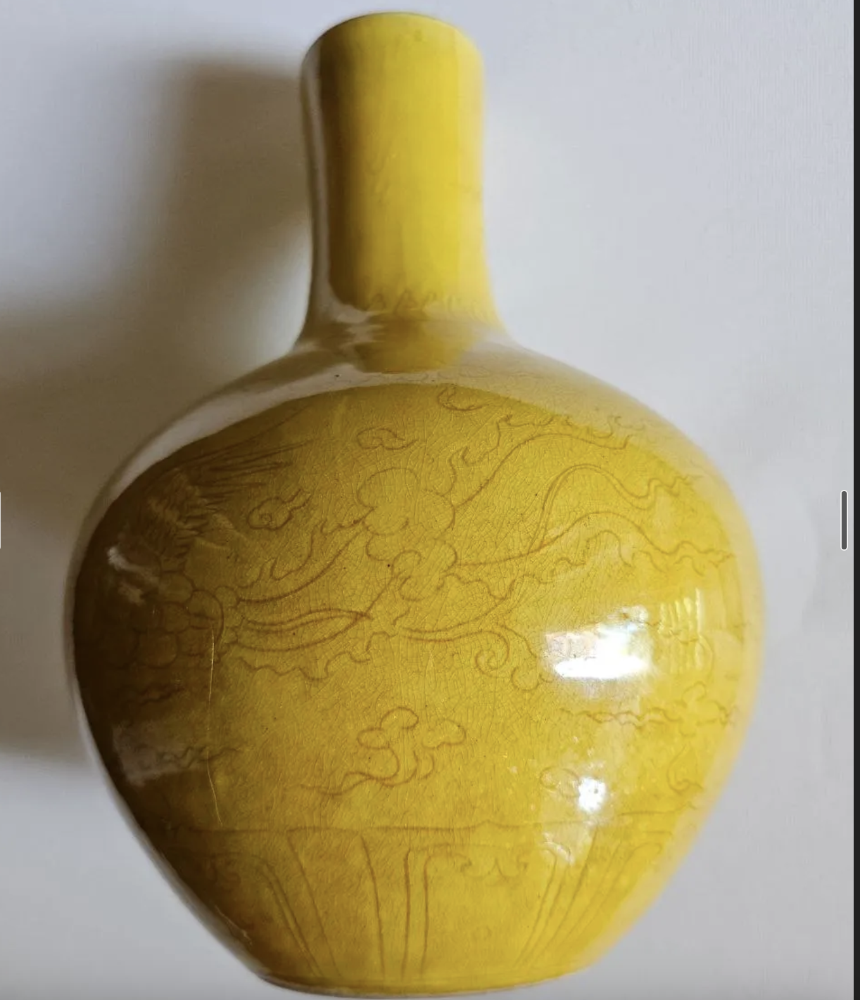
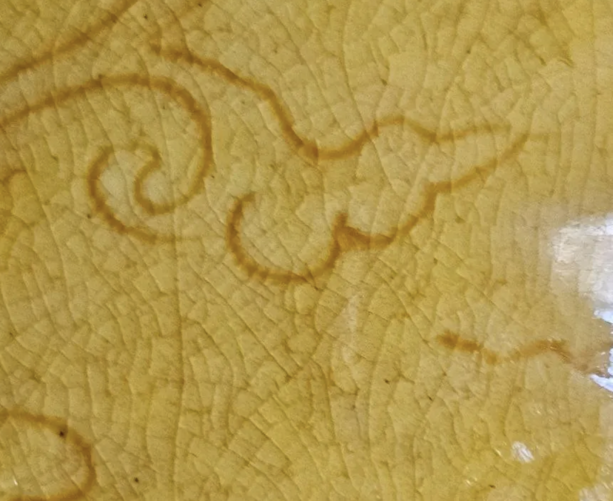
Gemological Optical Diagnostics
Examination by gemological optical microscopy reveals four independent microstructural diagnostic criteria, each arising from the authentic historical chemistry and firing conditions of Ming imperial yellow glaze. Together they constitute a coherent structural fingerprint of genuine Chenghua-period jiaohuang production.
4.1 Lead Immiscibility Effect (LIE)
The PbO–SiO₂ binary system exhibits a metastable miscibility gap at compositions of approximately 20–65 mol% PbO below the liquidus temperature. During cooling of the lead-silicate glaze from the firing temperature, the homogeneous melt enters this metastable field and separates into two distinct glass phases: a SiO₂-rich phase and a PbO-rich phase. The resulting two-phase glass structure is visible non-destructively through the intact glaze surface as characteristic wavy micro-stratification.
The LIE is the third in the author's series of gemological optical diagnostic concepts: following the Dry Earth Effect (DEE) for Northern Song Ru yao and the Sapphire Depth Effect (SDE) for Qianlong cobalt-blue ware.
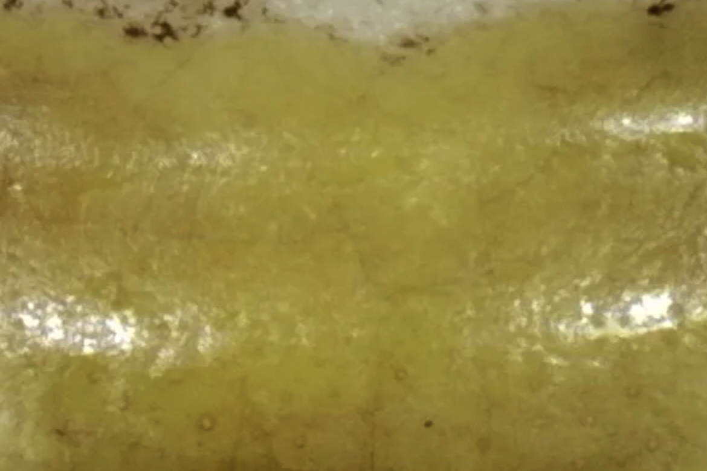
4.2 Gas Bubbles and Phase Separation at Higher Magnification
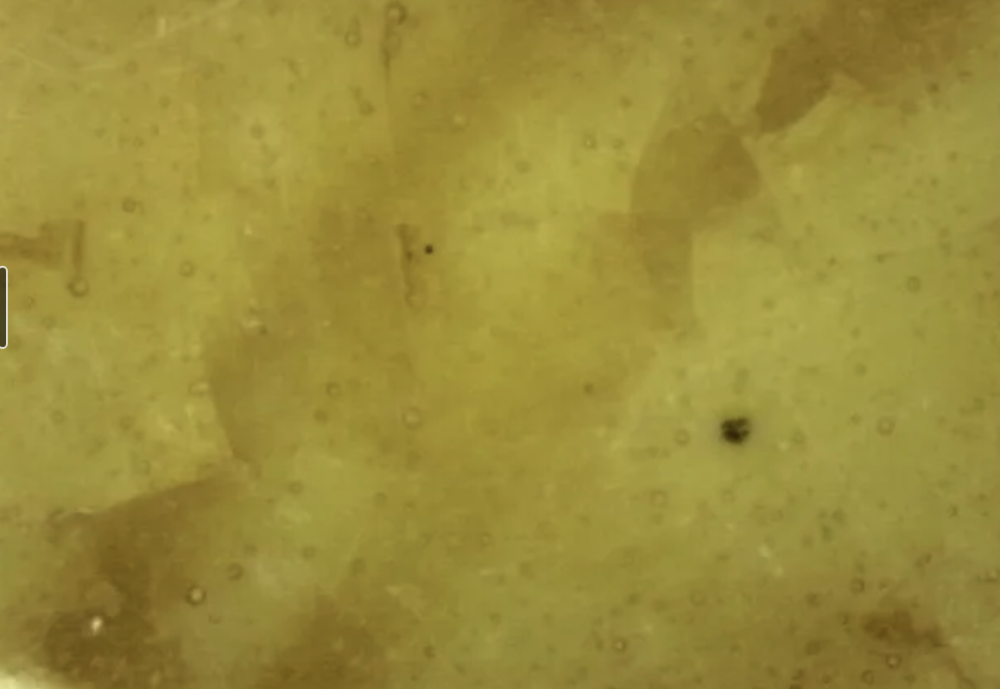
The bubble population — formed during decomposition of organic binders and carbonate raw materials at firing temperature — is consistent with scientific characterisation of Ming overglaze yellow glaze published by Hao et al. (2024) [1]. The glaze pooling in recessed anhua lines is also visible as a local deepening of yellow tone, creating the characteristic internal luminosity of authentic jiaohuang.
4.3 Pb-Leaching Iridescence Criterion (PLIC)
Over centuries of exposure to atmospheric moisture, Pb²⁺ ions are selectively leached from the outermost glaze surface by ion-exchange with H⁺/H₃O⁺. The depleted zone — enriched in SiO₂, depleted in PbO — forms a nanometric film (50–500 nm) acting as a thin-film optical interferometer. Constructive and destructive interference of reflected visible light produces the characteristic shifting blue-silver-white iridescence (побежалость). The diagnostic significance of PLIC is absolute: it confirms (1) the PbO–SiO₂ glaze system; (2) genuine long-term leaching measurable in centuries; (3) spatial irregularity physically impossible to reproduce artificially.
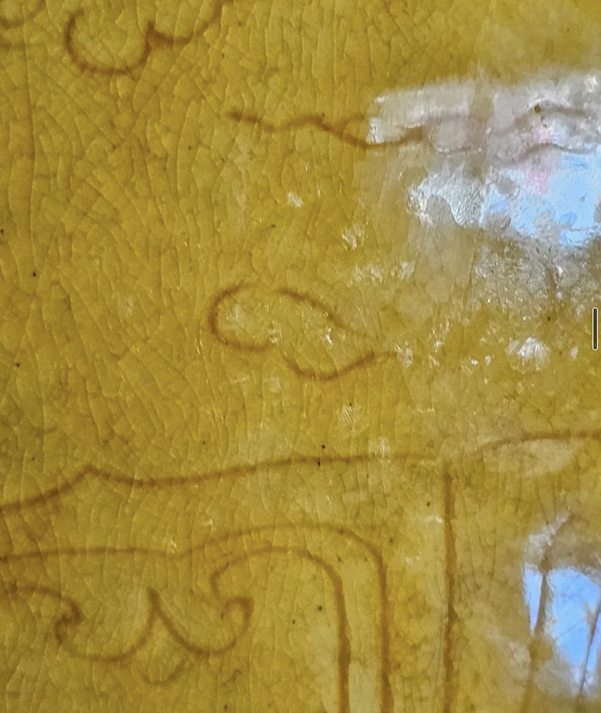
4.4 Engobe Layer — Non-Destructive Visualisation
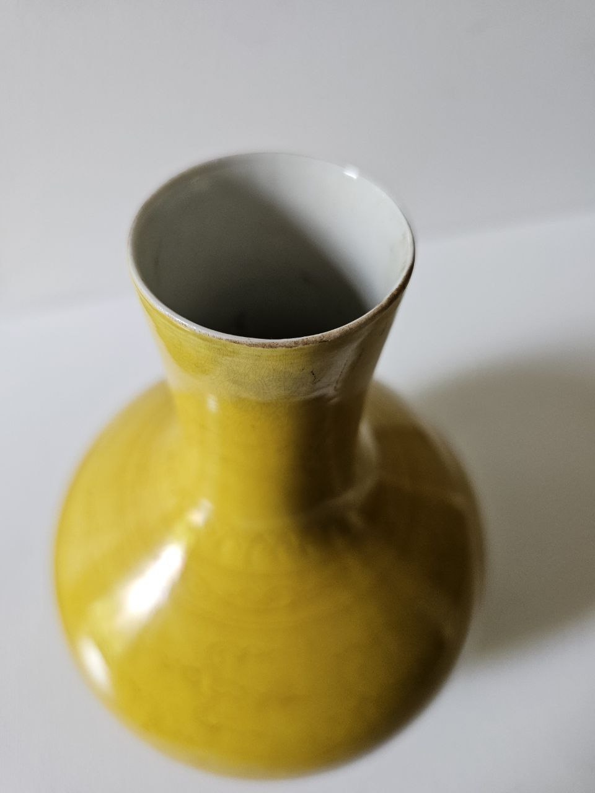
The engobe layer — a thin white slip applied to the fired porcelain body before the low-temperature yellow glaze — is the critical microstructural feature distinguishing Chenghua, Hongzhi, and Zhengde period yellow wares from all later Ming productions. Hou et al. (2022) established its presence through destructive TEM and EPMA-EDS cross-section analysis [2]. The present observation demonstrates that the engobe is optically visible through the glaze edge by reflected-light gemological microscopy without cross-section preparation — a direct contribution of gemological methodology to Ming imperial ceramic diagnostics.
Section 5Diagnostic Features Present
- Natural age-related crackle Fine even network in the lead-silicate matrix; organic staining in fissures accumulated over 500+ years of thermal cycling
- Imperial sacrificial yellow glaze (嬌黃) PbO–SiO₂–K₂O system; Fe₂O₃ sole chromophore; even warm tone with soft internal luminosity; honey pooling in anhua recesses
- Lead Immiscibility Effect (LIE) Wavy micro-stratification from metastable liquid–liquid phase separation in PbO–SiO₂ matrix; non-destructively observable at glaze surface
- Pb-Leaching Iridescence (PLIC) Nanometric SiO₂-enriched depletion film; blue-silver-white interference colours; spatially irregular; centuries-scale formation
- Engobe layer (白漿, baijiang) Thin white slip between porcelain body and yellow glaze; diagnostic of Chenghua–Hongzhi–Zhengde period; absent from Jiajing and later Ming productions
- Anhua incised decoration (暗花) Dragon and phoenix among clouds; flame frieze at shoulder; upright lappets at foot; stylus work with variable line hierarchy; visible under raking light only
- Underglaze cobalt reign mark 大明成化年製 within double circles; centred in white-glazed base recess; calligraphy conforming to guan yao standard
- Unglazed foot rim with firing tone Natural warm firing colour on the footring; no evidence of later grinding or alteration
X-Ray Fluorescence Analysis and Microscopy (pXRF, 2026)
On 3 November 2026 the vase was analysed non-destructively by portable X-ray fluorescence (analyser no. 940487, Geochem 3-Beam Extra mode, 30 s per point, in situ). In the measurement series it is Sample ID 4, “Vase 4” (archival reference CHENGHUA-YEL-001). Two points were measured: ID 6 on the yellow glaze of the body and ID 7 on the unglazed foot band, a mixed point that also takes in part of the white high-fired glaze and the edge of the cobalt mark. The results are set out, together with new microscopic observations, in the research article by Professor Nona Dronova (full text).
| Element | Yellow glaze (ID 6) | Base, mixed (ID 7) | Assessment |
|---|---|---|---|
| Pb | 48.97% ± 0.15 | 450 ± 21 | Genuine signal |
| Si | 16.53% | 23.39% | Genuine; absolute values inaccurate |
| Al | 4,500 ± 1,200 | 3.68% | Genuine |
| K | 4,440 ± 360 | 1.740% | Genuine; underestimated in the yellow glaze |
| Ca | ND (<460) | 2.106% | — |
| Fe | 820 ± 170 | 4,600 ± 170 | Genuine; low value in yellow glaze unresolved |
| Mn | 230 ± 180 | 749 ± 98 | Genuine |
| Co | ND (<19) | 63 ± 53 | At detection limit; includes edge of the mark |
| Rb / Sr | ND / ND | 397 / 81 | Genuine signals |
| Cr | 1,020 ± 220 | ND (<110) | Unresolved |
| Cu | ND (<37) | 25 ± 22 | No copper detected |
| Sb | ND (<10) | ND (<93) | Not detected |
| Zr | ND (<3) | 65 ± 7 | Not detected in the yellow glaze |
| Ti | ND (<510) | 770 ± 560 | Not detected / at detection limit |
| V | ND (<62) | ND (<210) | Not detected |
| As | 3.249% | 142 ± 20 | Predominantly an artefact (Pb Lα overlap) |
| S | 28.58% | 9,080 | Artefact (Pb M-line overlap) |
| Cd | 1,420 ± 290 | 30 ± 27 | Artefact (Pb sum peak) |
| Sn | 850 ± 320 | 55 ± 35 | Artefact (Pb sum peak) |
| Zn / Se | 2,960 / 290 | 65 / ND | Probably artefacts |
| Nb / Mo / Hf / W | 1,264 / 287 / 2,820 / 4,510 | 21 / 9 / 40 / 44 | Artefacts |
Instrument readings in ppm unless stated (±3σ), as assessed in the research article; grey rows are spectral artefacts of the high-lead matrix. The Geochem calibration assumes a light-element matrix, so values for a glaze with ~50% Pb are semi-quantitative. At ID 7 the measurement field includes rough body and glossy white glaze (LE 67%), so the body composition itself cannot be determined.
Cd and Sn — pulse pile-up. At ~20,000 counts/s on the lead lines the spectrum shows sum peaks at ≈21.1, 23.2 and 25.3 keV (Pb Lα+Lα, Lα+Lβ, Lβ+Lβ); the second coincides with Cd Kα, the third with Sn Kα. Three different ~50% Pb glazes from the same session give almost identical “Cd” (1,420–1,450 ppm), while a glaze with 7.4% Pb shows none (<19 ppm).
S and As — line overlaps. Pb M lines (2.35 keV) fall on S Kα (2.31 keV); Pb Lα (10.55 keV) falls on As Kα (10.54 keV). The As/Pb ratio (0.066) is the same as in two other ~50% Pb glazes (0.065, 0.066) — the mark of a lead artefact.
Zn, Se, Mo, Nb, Hf, W recur in every ~50% Pb glaze as escape and sum peaks; Hf 2,820 ppm with Zr <3 ppm is physically implausible. Read uncritically, these numbers would wrongly suggest modern cadmium yellow.
6.1 Microscopic observations
- Stepped glaze edgeSeveral parallel wavy “shorelines” at the foot band — successively applied layers, each ending on its own boundary
- Angular delaminationDark olive-ochre plates with straight edges along the crazing — mechanical lifting of the upper layer, not liquid-phase separation
- Bubbles in the lower layerRounded bubbles visible through both light and dark plates — a bubble-rich transparent layer beneath the yellow (cf. Hou et al., 2022)
- Ochre-brown in the incisionsColour deepens to ochre-brown in the anhua lines — consistent with an iron colourant in lead glass (visual; needs spectrophotometry)
- Iridescence and leached surfaceInterference film from leaching of lead and alkalis; consistent with low K and undetected Ca at the surface
6.2 Evidence relevant to the attribution
| No. | Feature observed | Published reference | Strength |
|---|---|---|---|
| 1 | High-lead, low-temperature glaze (PbO ≈ 53% by instrument) | Ming imperial yellow is a high-lead, low-temperature glaze system (Hou et al., 2022) | Moderate |
| 2 | Antimony not detected (<10 ppm) | Early Republican yellows used Sb and Sn (Zheng, Wu, Wu, 2008); Qing imported yellows included Pb–Sb | High |
| 3 | Zr <3, V <62, Ti <510 ppm | 20th-century industrial yellows based on zircon and rutile | High |
| 4 | Multilayer coating with bubbles in the lower layer | Transparent bubble-rich layer, 150–450 μm, beneath the yellow glaze (Hou et al., 2022); slip in Chenghua–Zhengde samples | Moderate |
| 5 | Angular delamination of the upper layer along the crazing | Delamination of lead layer over transparent glaze (Palace Museum) | Moderate |
| 6 | Ochre-brown darkening in the incisions | Iron is the colourant of Ming yellow glaze (Hao et al., 2024) | Low–moderate |
| 7 | Iridescence, convex crazing cells, leached surface | Long-term weathering of lead glazes | Moderate |
| 8 | Base: Rb/Sr ≈ 5, no modern markers; Mn near the cobalt mark | Jingdezhen raw materials; post-Xuande imperial cobalt with Mn/Fe >0.3 (Du Feng et al.) | Low |
Items 1–3 rest on instrumental measurements, 4–7 on optical observations, 8 on a mixed measurement point.
The instrumental and optical data are consistent with the technology of early Ming imperial yellow glaze, and no reliable markers of modern or early Republican manufacture were found. They do not by themselves prove a Chenghua date. Open questions: the low surface iron reading (Fe 820 ppm against 1.81–4.87 wt.% Fe₂O₃ reported for Ming imperial yellow), the chromium signal (~1,000 ppm), the mixed base measurement, and the typological uniqueness of the tianqiuping form. A programme of further non-destructive verification is proposed.


Scientific Publications
The object is documented in a series of ten publications by Professor Nona Dronova deposited on Zenodo (CERN / OpenAIRE). All works are open access under CC BY 4.0.
Academic References
- [1]Hao M., Zhang M., Weng Y., Xiong Z. (2024). Chromogenic mechanisms of overglaze yellow pigment produced in Jingdezhen imperial kilns during the Ming dynasty. npj Heritage Science, 12, 343. https://doi.org/10.1186/s40494-024-01458-0
- [2]Hou Y., Zheng N.-Z., Wu J. (2022). The origins of imperial yellow glazed porcelain in the Ming Dynasty China. Archaeometry, 64(3), 692–706. https://doi.org/10.1111/arcm.12692
- [3]Harrison-Hall J. (2001). Ming Ceramics in the British Museum. British Museum Press.
- [4]Kerr R., Wood N. (2004). Science and Civilisation in China, Vol. 5, Pt. 12: Ceramic Technology. Cambridge University Press.
- [5]Valenstein S. (1998). A Handbook of Chinese Ceramics. The Metropolitan Museum of Art.
- [6]Jiang L. et al. (2020). Chemical evolution of lead in ancient artifacts. Ceramics International, 46(5). https://doi.org/10.1016/j.ceramint.2019.11.078
- [7]Jiang L., Cai Z., Ma H. et al. (2024). Corrosion mechanisms for lead-glazed pottery from Qibi Ming Tomb. npj Heritage Science. https://doi.org/10.1038/s40494-024-01343-w